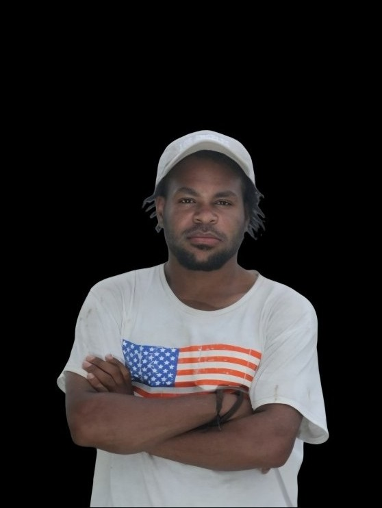

Meson Wakerkwa
👋🏽 Halo, saya Meson! Saya mahasiswa Informatika di Uningrat Papua, fokus belajar web programming. Saat ini saya aktif di komunitas SaCode yang metode belajarnya sangat mudah dipahami.

Perjalanan & Komunitas
Berkembang Bersama SaCode Papua
Sejak tahun 2025, saya aktif belajar dan mengembangkan keterampilan di bidang web development, khususnya dalam HTML, CSS, dan JavaScript. Komunitas SaCode menjadi tempat terbaik untuk bertumbuh bersama teman-teman programmer muda Papua.
Selama mengikuti komunitas ini, saya banyak mendapatkan ilmu baru yang sangat bermanfaat untuk masa depan saya, termasuk dasar-dasar pemrograman JavaScript. Saya juga berhasil memperoleh Sertifikat hasil belajar.
Kunjungi SaCode
Pendidikan & Keahlian
Riwayat Pendidikan
Perjalanan Belajar Meson Wakerkwa
Kampus UNINGRAT Papua & Komunitas SaCodeSaya adalah Meson Wakerkwa, seorang anak gunung yang sedang menempuh ilmu di bangku kuliah jurusan Informatika. Fokus saya adalah menjadi seorang web programmer yang handal. Saat ini, saya juga aktif belajar bersama komunitas SaCode, tempat yang luar biasa untuk berbagi dan bertumbuh. Di sana, saya tidak hanya belajar coding, tapi juga membangun semangat untuk menciptakan solusi teknologi yang dibutuhkan masyarakat. Saya percaya, belajar adalah jalan untuk memberi dampak positif bagi banyak orang.
Perjalanan Belajar Coding
Di Komunitas SaCodeSelama menempuh ilmu coding, saya berhasil membuat proyek pertama untuk SMP Negeri 4 Pirime. Dengan dukungan komunitas SaCode, saya terus mengembangkan kemampuan dan berkontribusi menciptakan solusi teknologi yang bermanfaat bagi masyarakat. Proyek ini menjadi langkah awal untuk mewujudkan visi saya dalam membangun teknologi yang membantu kehidupan banyak orang.
Saya Masih Aktif Di Comunitas SaCodePengalaman Kerja
Belum Memiliki Pengalaman Kerja Formal
Masih dalam proses belajar dan mengembangkan diriSaat ini saya belum memiliki pengalaman kerja formal di perusahaan, namun saya aktif mengembangkan keterampilan di bidang web development dan teknologi informasi. Saya membuat berbagai proyek pribadi dan mengikuti kegiatan komunitas seperti SaCode untuk meningkatkan kemampuan saya. Saya percaya bahwa setiap langkah kecil dalam proses belajar adalah fondasi besar menuju masa depan yang lebih baik.
Belajar Coding Secara Mandiri
Komunitas SaCode - PapuaSaya belajar coding secara mandiri, baik di rumah maupun di mana saja dan kapan saja selama saya merasa nyaman. Melalui komunitas SaCode, saya semakin termotivasi untuk terus mengasah kemampuan dan berinteraksi dengan sesama pembelajar teknologi. Proses belajar ini bukan hanya membentuk keterampilan teknis, tetapi juga karakter pantang menyerah dan semangat untuk berkontribusi membangun Papua melalui teknologi.
Tutorial Coding Dasar HTML CSS & JavaScript
LSM Pengembangan SDM & Riset di PapuaSaat ini saya mengajar dasar-dasar pemrograman web seperti HTML dan CSS. Tujuan saya bukan hanya untuk mengajar, tetapi juga untuk semakin memahami dan mendalami bahasa pemrograman yang saya pelajari. Karena dengan mengajar, saya bisa sekaligus belajar lebih dalam dan memahami logika coding dengan lebih baik. Ini juga menjadi sarana bagi saya untuk terus berkembang bersama komunitas belajar seperti SaCode, agar ke depan bisa memberi dampak lebih luas melalui teknologi di Papua.
Development
Design & Creative
Saya Meson
👋 hai Saya adalah seorang mahasiswa Informatika yang memiliki passion tinggi di dunia teknologi. Saat ini, saya aktif belajar coding di komunitas SaCode. Di sana, saya tidak hanya belajar menulis kode, tetapi juga bagaimana menciptakan solusi digital yang nyata untuk membantu masyarakat. Metode belajar di SaCode sangat interaktif dan mudah dipahami, membuat saya semakin termotivasi untuk menjadi developer yang handal.